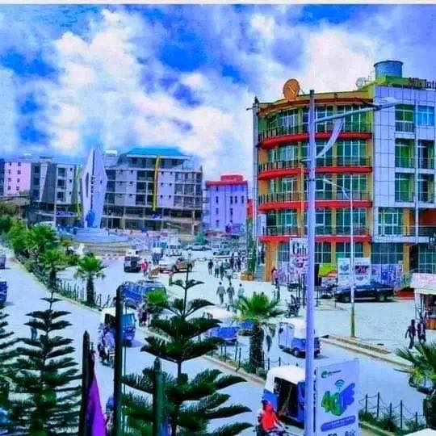
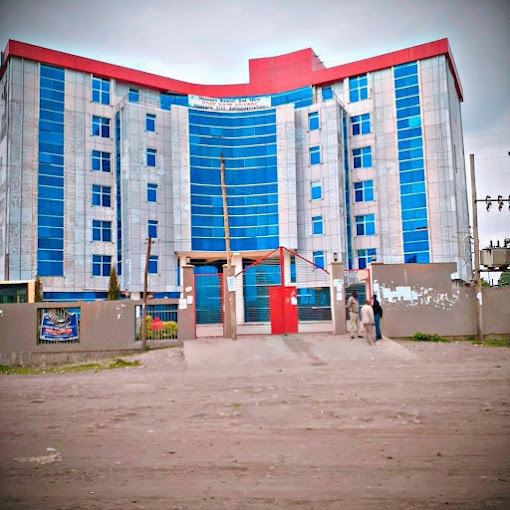

Our Office Centers
If you want to our services you can found as in this three place

Mesalemiya(Head Office)

Gombora

This department plays a crucial role in promoting scientific research, technological advancement, and the dissemination of information technology in the region.
Department is a governmental body responsible for overseeing the development and implementation of science and technology initiatives within the Hadiya Zone.
the services that we offer.
Strategic Planning: Develop and oversee the implementation of the strategic plan for science and communication technology in the Hadiya Zone
Leadership: Provide overall leadership and direction to the office, ensuring alignment with regional and national science and technology policies.
Vision and Mission: Establish and articulate the vision and mission for the science and communication technology sector in the Hadiya Zone.
Policy Development: Lead the development and implementation of policies and strategies to advance science and technology in the region
Technical Experts:IT Specialists: Maintain and develop IT infrastructure and systems.
Administrative Staff:
Office Managers: Handle day-to-day administrative tasks, such as scheduling, correspondence, and records management.
If you want to our services you can found as in this three place
Have suitable and safe for your kids mind and health

a place set apart to contain computers, periodicals, and other material for reading, viewing, listening, study, or reference, as a room, set of rooms, or building where computres may be read or borrowed.
Definitions of basketball court. the court on which basketball is played. types: home court. (basketball) the court where the host team plays its home games. type of: court.

Walter Camp is credited with altering the rules of rugby to create the game of modern North American football we are familiar with today.
our senior and junior clients comment about our treatment

Their commitment to bridging the digital divide and promoting scientific research makes them an ideal partner for projects aimed at sustainable development. The department's proactive approach ensures that all initiatives align with the broader goals of regional growth and technological advancement.

Department is highly collaborative and forward-thinking, consistently seeking innovative solutions to enhance technology infrastructure and education in the region.